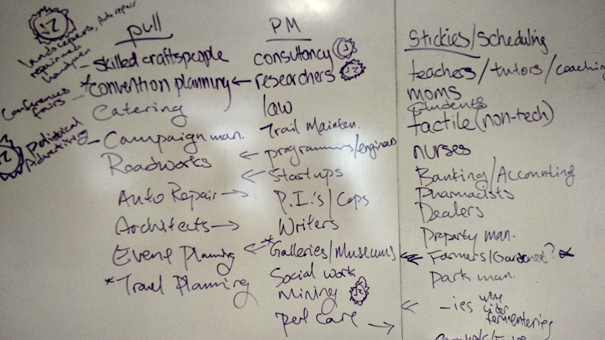

Touchplan.io is a great app (currently in beta here) made by a team at MOCA Systems, a construction consulting company. My team was tasked with investigating new markets, and determining changes to the app that would better serve that market.
We focused on the fundamental characteristics of Touchplan when deciding how to change it, and for whom. A strong characteristic of the app is its faithfulness to a tactile experience. We wanted to preserve that feeling of reality and the ability to tangibly interact with the app in our iteration. We decided to also work with the planning functionality and accommodations for multiple users.
After narrowing to three markets (artists/galleries, political campaigners, and event planners), we realized that the event planning market is saturated and that campaign workers were too temporary a base.
Everyone involved in hanging gallery art shows.
Planning and implementing an art show is extremely time-consuming, especially given the difficulty of visualizing the layout before hanging.
Provide a virtual environment identical to the gallery space that participants can use to hang renderings of artworks for planning purposes.
We traveled to a number of galleries and museums to ask what features would be most desirable, and if people would use the app. We found artists and small galleries to be enthusiastic, but that larger museums were usually not in the market for additional tools. The primary requirements were that it be easy to use and true to life.
Given the input we received, we mocked up a simple version of what a gallery owner would see navigating through the app.
We likewise mocked up the artists' flow through the app. The artists need access to their art and the space, but do not require access to the room building functions.
Using a clickable mockup, we had users walk through both gallery and artist experiences to discover their reactions to the site. We were able to better align certain processes with user expectations, as well as add small cues to help users in areas where they typically got stuck. These changes included providing increased navigation options and navigational cues, as well as rewording certain data entry options.